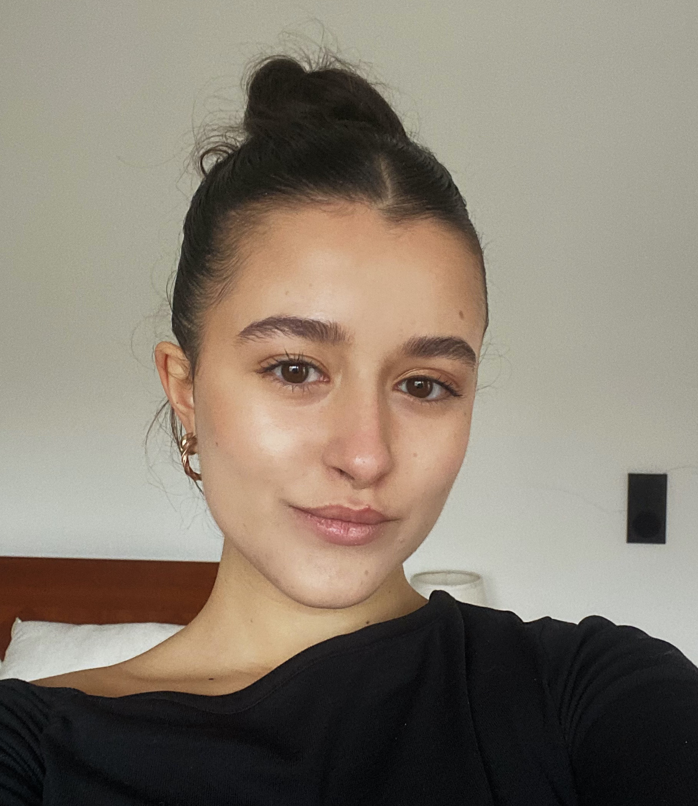

Entre viajes, historias y recuerdos
Viajar siempre ha sido una de mis formas favoritas de descubrirme. Cada destino me deja un poquito distinta, me inspira y me recuerda lo inmenso que es el mundo. Pero nada se compara a Portugal, mi tierra, donde cada rincón me hace sentir en casa.

Cuando viajo con mi familia, la felicidad se multiplica: risas, abrazos, caos y recuerdos que sé que guardaré para siempre. Cada aventura juntos transforma lo cotidiano en algo mágico.

La moda para mí no es solo ropa: es expresión, actitud, una manera de contar quién soy sin pronunciar una palabra. Cada look refleja un lado de mi historia, como un capítulo más de este viaje personal.
Cocinar es mi manera de cuidar de los demás. Mezclar sabores, probar algo nuevo o repetir recetas de siempre; todo con un poquito de cariño que se siente en cada plato.
Mi familia es mi punto de partida y mi lugar seguro. Y no estaría completa sin Hachi, mi compañera de energía y ternura que hace que cualquier día sea mejor.
Los libros son mi refugio. Historias en inglés, romances o mundos imaginarios me regalan calma e inspiración. Entre páginas encuentro momentos para mí, aunque el mundo siga girando afuera.
Terminar mi grado en Portugal, con el traje académico tradicional, fue uno de esos momentos que marcan para siempre: un cierre, un comienzo y un orgullo enorme. Cada experiencia, cada recuerdo, cada gesto, forma este viaje que es mi vida.